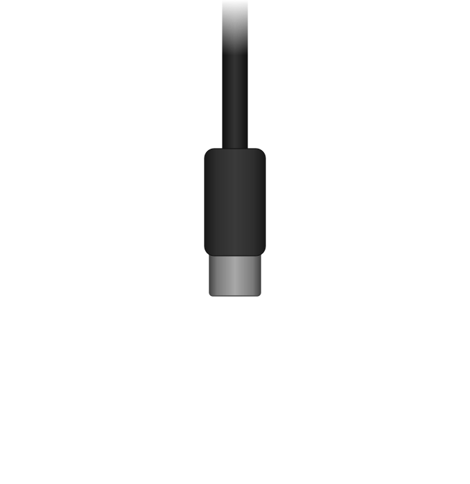
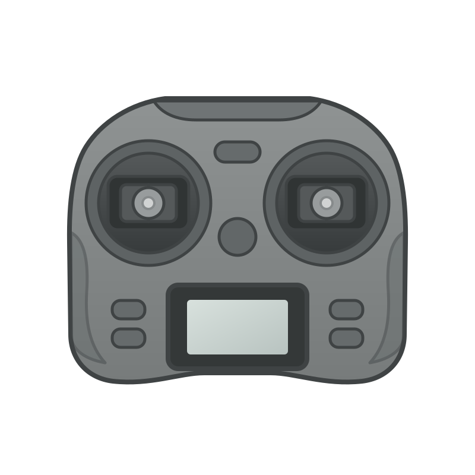

Power your radio
from USB
Boot your EdgeTX or OpenTX radio from USB — no battery required. Plugging in while powered off puts the radio into DFU mode; this tool kicks it out at the right moment so it starts normally and stays powered from USB.
Use at your own risk. If anything breaks, that's on you.
Connect your radio
to PC ↕


↓ data port- 1 Make sure your radio is completely off
- 2 Plug a USB cable into the top data port on your radio
- 3 Connect the other end to a direct USB port on your PC — avoid hubs if possible
- 4 The radio will power on with a blank screen — this is bootloader (DFU) mode. Correct.
USB-C to USB-C not detecting? Try a USB-A to USB-C cable — some radios have the CC lines miswired.
Pair with browser
Click below to open the browser's device picker. Select STM32 BOOTLOADER when it appears.
Waiting for radio…
On Windows, the browser can only access USB devices using the WinUSB driver. The default STM32 DFU driver blocks it. Replace it using one of these:
If you use a Thrustmaster steering wheel, their drivers have been known to interfere with this process. Uninstall them or switch to another PC.
Exit DFU mode
Radio is USB-powered
Your radio has exited DFU and is booting normally. Keep it plugged in — it'll run on USB power.
Keep in mind
- Disable the internal TX module in EdgeTX model settings — it cuts power draw significantly and helps prevent brown-outs
- Use a powered USB hub or a port directly on your computer for better current delivery
- The radio may reboot or shut off if the USB port can't supply enough current